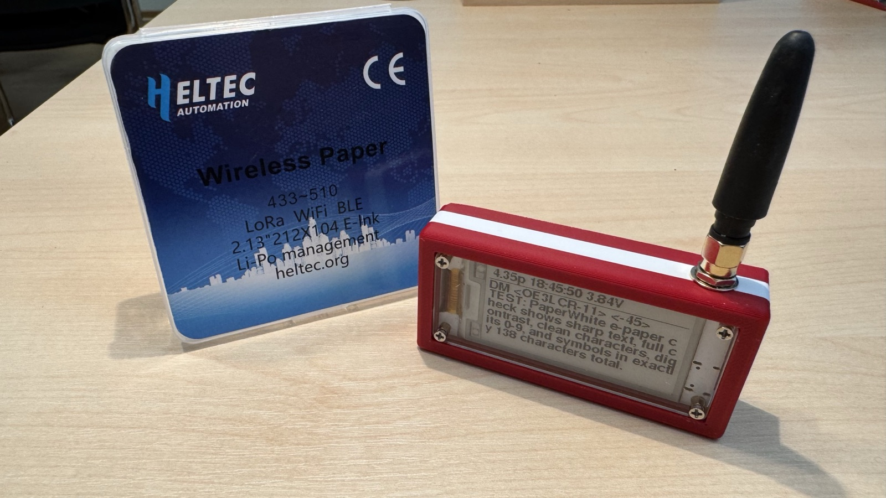
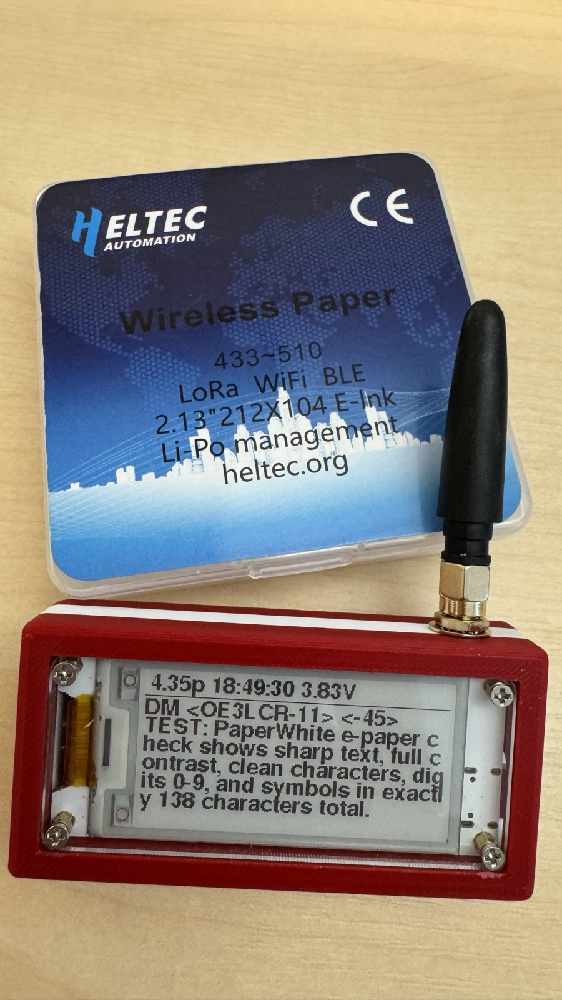
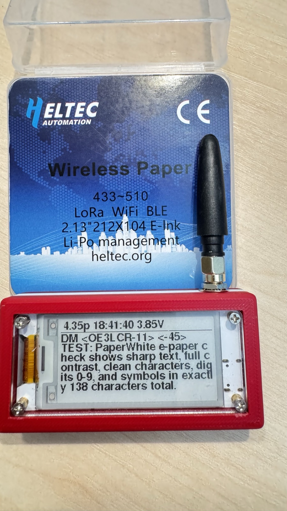
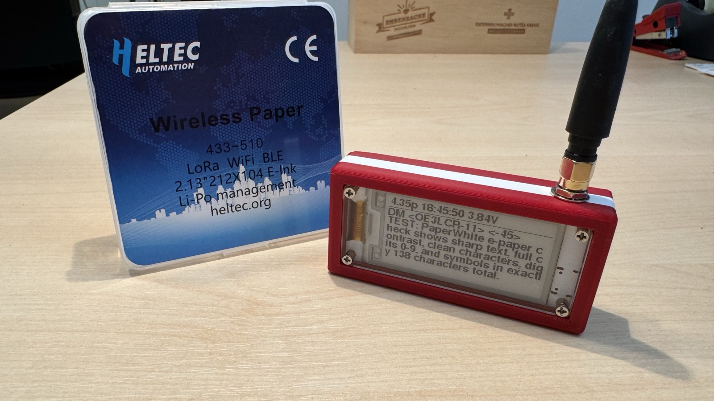
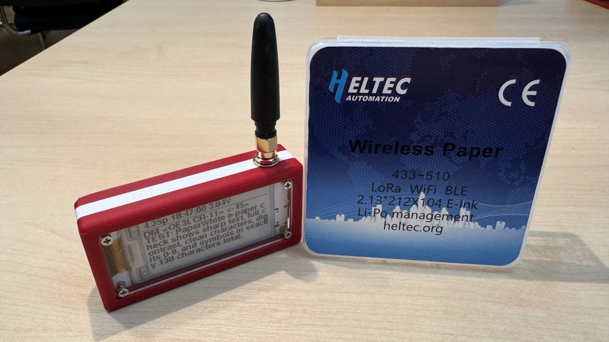
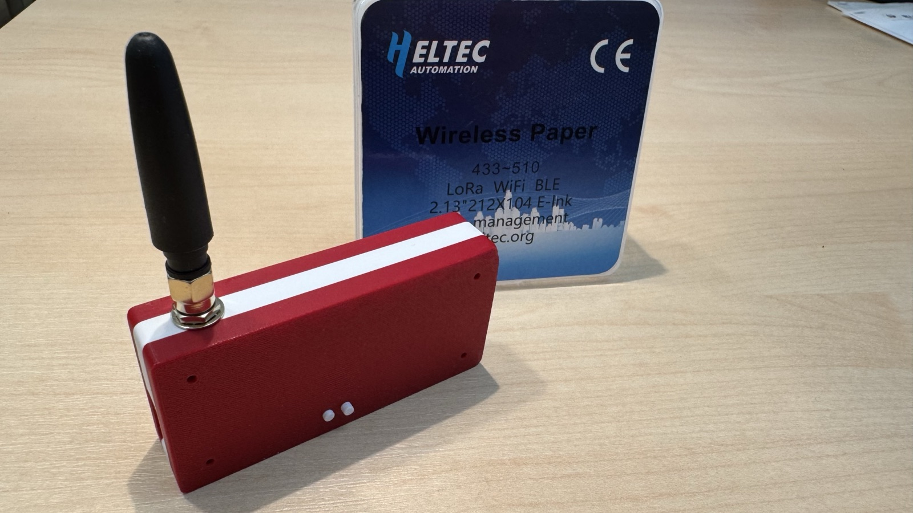

MeshCom · LoRa · E-Ink
Heltec Wireless Paper
Ein winziger, akkubetriebener LoRa-Mesh-Knoten mit stromsparendem 2,13″-E-Ink-Display – als MeshCom-Node für den Amateurfunk. Nachrichten bleiben auch ohne Strom ablesbar, der Akku hält dank Deep Sleep tagelang.

Worum geht's in diesem Projekt?
Vom Board zum fertigen MeshCom-Node.
Das Heltec Wireless Paper kombiniert einen ESP32-S3, einen Semtech-SX1262-LoRa-Chip und ein 2,13″-E-Ink-Display auf einer Platine in Streichholzschachtel-Größe. Mit der MeshCom-Firmware wird daraus ein vollwertiger Knoten im MeshCom-Amateurfunknetz: er empfängt und sendet Textnachrichten und Positionen über LoRa, zeigt den Status dauerhaft auf dem E-Ink an und schläft dazwischen im Mikroampere-Bereich. Dieses Projekt liefert die passende angepasste Firmware (Web-Flasher), eine Stückliste und ein 3D-druckbares Gehäuse (Fusion 360).
Highlights
Warum sich der kleine Knoten lohnt.
LoRa-Mesh-Reichweite
SX1262 mit bis zu +22 dBm, SF11/250 kHz – kilometerweit, ganz ohne Internet oder Mobilfunk.
E-Ink immer ablesbar
Das 2,13″-Display behält sein Bild ohne Strom. Letzte Nachricht, Status und Akkustand bleiben auch im Schlaf sichtbar.
Akku-optimiert
Deep Sleep mit abgeschaltetem LoRa & Display → ~µA statt mA. Ladeerkennung verhindert Einschlaf-Schleifen bei leerem Akku.
In 1 Minute geflasht
Direkt aus dem Browser über craith.cloud/espflash – kein esptool, keine Kommandozeile, kein Treiber-Gefrickel.
Technische Daten
Heltec Wireless Paper (V1.1 & V1.2).
Galerie
Zum Vergrößern anklicken.




Stückliste (BOM)
Was du für den kompletten Aufbau brauchst.
| Bauteil | Menge | Hinweis |
|---|---|---|
| Heltec Wireless Paper (V1.1 oder V1.2) | 1× | Das Herzstück – ESP32-S3 + SX1262 + E-Ink. Beide Panel-Versionen werden automatisch erkannt. |
| LoRa-Antenne (SMA) | 1× | Passend zur Frequenz: 433 MHz (AT 70 cm) bzw. 868/915 MHz. Nie ohne Antenne senden. |
| LiPo-Akku 3,7 V, JST 1.25 | 1× | z. B. 1000–2000 mAh; auf Stecker-Polung achten (Heltec-Standard). |
| Gehäuse + Knopf (3D-Druck) | 1 Satz | Ober-/Unterteil & Tastenkappe – STL/Fusion 360 unten zum Download. |
| Schrauben M2 (selbstschneidend) | 4× | Zum Verschrauben des Gehäuses – Länge je nach Druckteil. |
| USB-C-Datenkabel | 1× | Echtes Datenkabel (nicht nur Laden) – zum Flashen & Laden. |
Gehäuse · 3D-Druck
Eigenes Design in Autodesk Fusion 360 – druckbar auf jedem FDM-Drucker.

Gedruckt im Austria-Design (Rot-Weiß-Rot): zweifarbiges Gehäuse mit Display-Ausschnitt, Antennen-Durchlass und Öffnungen für RESET- und PRG-Taste. Die Tastenkappe (Knopf) wird separat gedruckt.
Empfohlene Druck-Einstellungen
Download
Gehäuse (Ober- & Unterteil)
Knopf (Tastenkappe)
⚡ Firmware direkt im Browser flashen
Heltec Wireless Paper anstecken, Board wählen, fertig. Die MeshCom-Firmware mit allen craith-Erweiterungen läuft in unter einer Minute – ganz ohne Installation.
🔌 Zum Web-Flasher